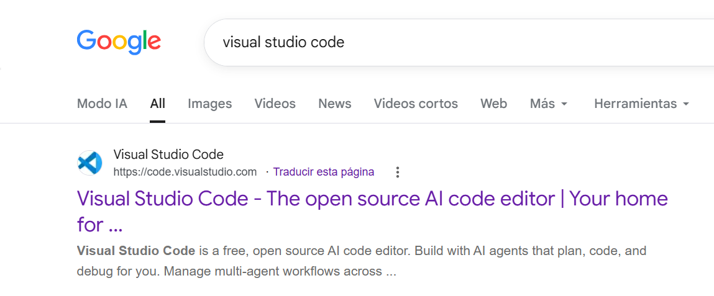
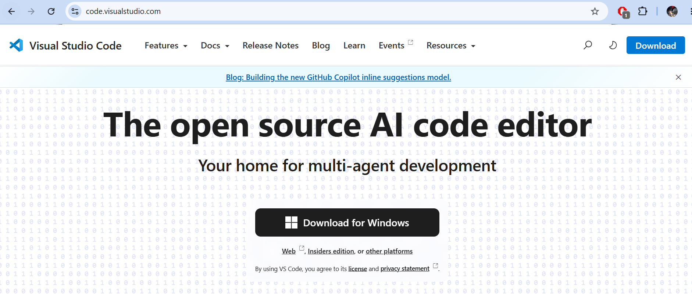
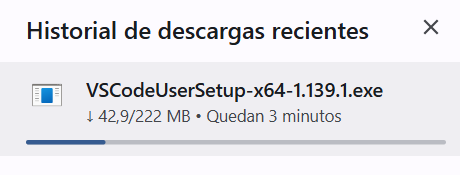
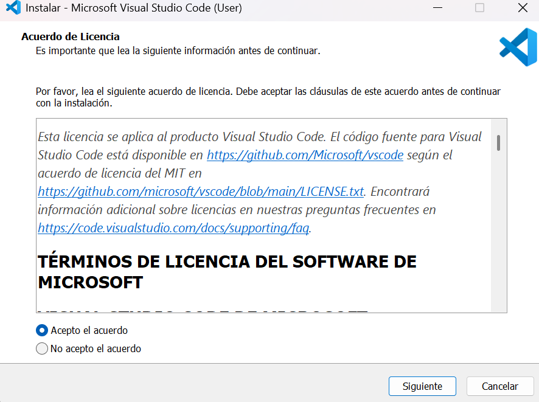
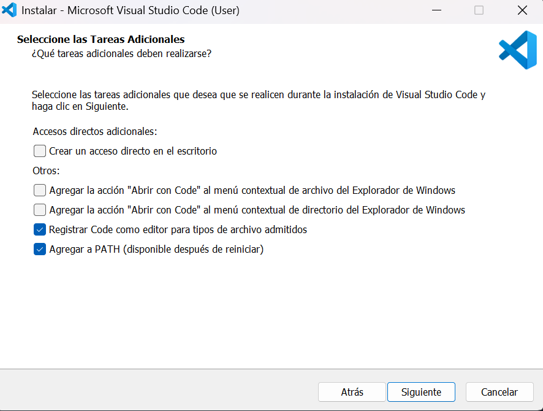
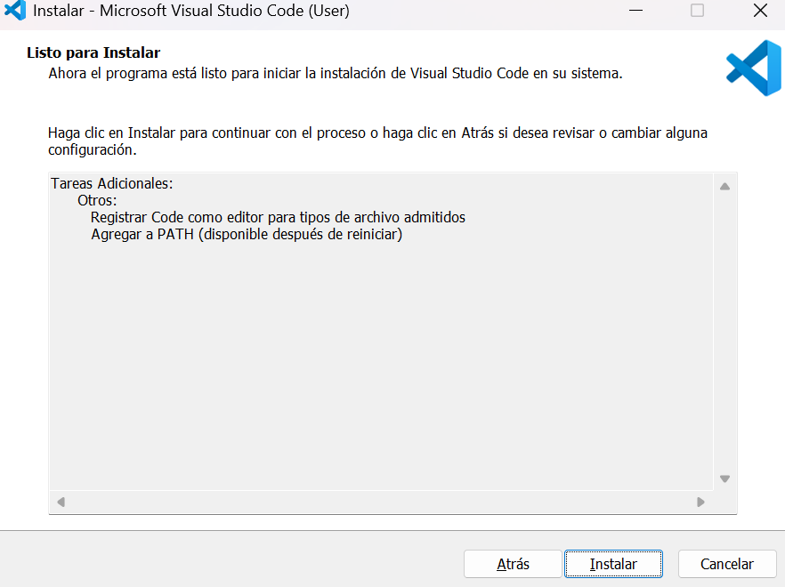
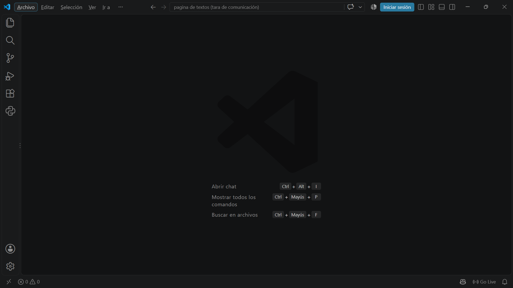

Textos Instructivos
Los textos instructivos son aquellos que proporcionan
indicaciones ordenadas para realizar una actividad,
utilizar un producto o completar un procedimiento.
Su objetivo principal es orientar al lector de manera
clara y precisa.
¿Qué son?
Un texto instructivo es un tipo de texto que explica
paso a paso cómo realizar una determinada tarea.
Las instrucciones deben presentarse de forma lógica,
ordenada y comprensible para que el lector pueda
seguirlas correctamente.
Propósito
Su propósito es facilitar la realización de una
actividad mediante instrucciones claras que indiquen
qué debe hacerse y, cuando sea necesario, en qué
orden debe hacerse.
Características principales
-
Presentan instrucciones claras y ordenadas.
-
Utilizan un lenguaje preciso y fácil de comprender.
-
Generalmente organizan las acciones mediante pasos
numerados o enumerados.
-
Pueden utilizar verbos en modo imperativo, como
"seleccione", "instale", "conecte" o "presione".
-
Pueden incluir imágenes, diagramas, símbolos o
advertencias para facilitar la comprensión.
-
Se enfocan en conseguir un resultado específico.
Estructura
Aunque la estructura puede variar dependiendo de la
actividad, un texto instructivo generalmente contiene
los siguientes elementos:
-
Título:
indica qué procedimiento se realizará.
-
Materiales o requisitos:
especifica lo necesario para realizar la actividad.
-
Procedimiento:
presenta las instrucciones en un orden determinado.
-
Resultado:
indica qué debería ocurrir al finalizar correctamente.
Ejemplo aplicado
A continuación se presenta un ejemplo de texto instructivo
relacionado con el área de desarrollo de software:
Instalación de Visual Studio Code
Objetivo:
instalar correctamente Visual Studio Code en una computadora
para utilizarlo como entorno de desarrollo y edición de código.
Requisitos
- Computadora con conexión a Internet.
- Sistema operativo compatible.
- Espacio disponible en el almacenamiento.
Procedimiento
-
Abra un navegador web y acceda al sitio oficial de
Visual Studio Code.

-
Seleccione la opción de descarga correspondiente
al sistema operativo de su computadora.

-
Espere a que finalice la descarga del instalador.

-
Ejecute el archivo de instalación descargado.
-
Lea y acepte los términos y condiciones de la licencia.

-
Configure las opciones adicionales de instalación
según sus preferencias.

-
Presione el botón “Instalar”
y espere a que finalice el proceso.

-
Abra Visual Studio Code para comprobar que la
instalación se realizó correctamente.

Resultado
Al completar correctamente los pasos, Visual Studio Code
estará instalado y listo para utilizarse en proyectos de
programación y desarrollo de software.
Importancia en el ámbito profesional
Los textos instructivos son especialmente importantes
en áreas tecnológicas porque permiten explicar el uso
de programas, equipos y sistemas de manera ordenada.
Una instrucción clara puede facilitar el trabajo,
reducir errores y ayudar a que diferentes personas
puedan realizar un mismo procedimiento correctamente.